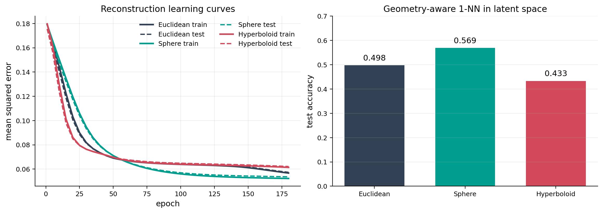
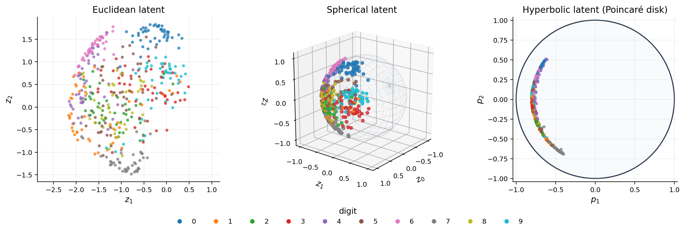
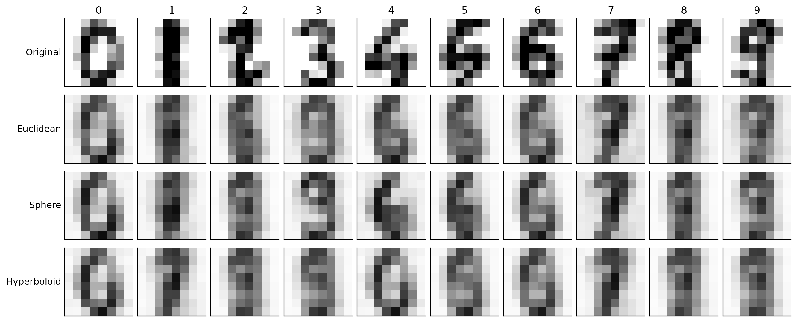
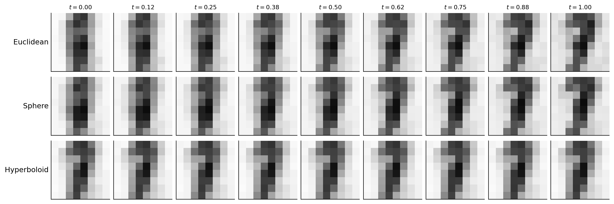

Deterministic autoencoders with curved latent spaces#
A deterministic autoencoder learns an encoder \(f_\theta\) and decoder \(g_\phi\) by minimizing reconstruction error. Ordinarily its latent variable belongs to a Euclidean vector space [Hinton and Salakhutdinov, 2006]. Here we keep the neural networks deliberately small and compare three two-dimensional latent geometries:
All three models use the same encoder and decoder widths, initialization, optimizer, and training data. The only change is the map from two encoder outputs to a point on the latent manifold. The affine realization \(\mathcal E\subset\mathbb R^3\) gives every decoder the same three-coordinate input without changing the Euclidean distances between the two free coordinates. This is an illustrative comparison, not evidence that one curvature is universally preferable.
Spherical and hyperbolic latent-variable models have been developed most extensively in variational settings [Davidson et al., 2018, Mathieu et al., 2019]. The deterministic experiment below strips away the stochastic objective so that the role of GeoJAX’s manifold-valued activations can be inspected directly.
From encoder coordinates to a manifold#
Let \(a=f_\theta(x)\in\mathbb R^2\). At the common ambient base point \(o=(1,0,0)\), form the tangent vector
The smooth radial map \(\rho\) keeps spherical tangent lengths below \(r<\pi\), away from the antipodal cut locus. The three latent maps are
For the sphere and hyperboloid, GeoJAX evaluates the closed forms
Their removable zero-norm singularities are filled analytically, so an encoder initialized at \(a=0\) still has finite, correct gradients.
import jax
import jax.numpy as jnp
import matplotlib.pyplot as plt
import numpy as np
from matplotlib.lines import Line2D
from sklearn.datasets import load_digits
from sklearn.model_selection import train_test_split
from geojax.geometry import Euclidean, Hyperboloid, Sphere
from geojax.learning import geodesic_interpolation, pairwise_distances
plt.rcParams.update({
"figure.dpi": 200,
"savefig.dpi": 260,
"font.size": 11,
"axes.titlesize": 12,
"axes.labelsize": 11,
"xtick.labelsize": 9,
"ytick.labelsize": 9,
"legend.fontsize": 9,
"axes.spines.top": False,
"axes.spines.right": False,
})
Compile and train#
The update below is fully compiled. Model parameters remain ordinary JAX pytrees: manifold geometry governs the latent activations, while standard Euclidean Adam updates the network weights. This separation is intentional; GeoJAX does not require a particular neural-network framework.
def zeros_like_tree(tree):
return jax.tree_util.tree_map(jnp.zeros_like, tree)
def train_model(geometry, epochs=180, learning_rate=3e-3):
encode, decode, loss = make_model(geometry)
parameters = init_parameters(jax.random.key(15))
first_moment = zeros_like_tree(parameters)
second_moment = zeros_like_tree(parameters)
@jax.jit
def step(parameters, first_moment, second_moment, iteration):
value, gradients = jax.value_and_grad(loss)(parameters, x_train)
first_moment = jax.tree_util.tree_map(
lambda moment, gradient: 0.9 * moment + 0.1 * gradient,
first_moment,
gradients,
)
second_moment = jax.tree_util.tree_map(
lambda moment, gradient: 0.999 * moment + 0.001 * gradient**2,
second_moment,
gradients,
)
corrected_first = jax.tree_util.tree_map(
lambda moment: moment / (1.0 - 0.9**iteration),
first_moment,
)
corrected_second = jax.tree_util.tree_map(
lambda moment: moment / (1.0 - 0.999**iteration),
second_moment,
)
parameters = jax.tree_util.tree_map(
lambda parameter, mean, variance: (
parameter - learning_rate * mean / (jnp.sqrt(variance) + 1e-8)
),
parameters,
corrected_first,
corrected_second,
)
return parameters, first_moment, second_moment, value
history = {"epoch": [], "train": [], "test": []}
for epoch in range(1, epochs + 1):
parameters, first_moment, second_moment, train_loss = step(
parameters,
first_moment,
second_moment,
jnp.asarray(epoch, dtype=jnp.int32),
)
if epoch == 1 or epoch % 5 == 0:
history["epoch"].append(epoch)
history["train"].append(float(train_loss))
history["test"].append(float(loss(parameters, x_test)))
train_latent = encode(parameters, x_train)
test_latent = encode(parameters, x_test)
nearest = jnp.argmin(
pairwise_distances(
geometry, test_latent, train_latent, squared=True
),
axis=-1,
)
accuracy = jnp.mean(jnp.asarray(y_train)[nearest] == jnp.asarray(y_test))
return {
"parameters": parameters,
"encode": encode,
"decode": decode,
"loss": loss,
"history": history,
"train_latent": train_latent,
"test_latent": test_latent,
"test_mse": float(loss(parameters, x_test)),
"nearest_neighbor_accuracy": float(accuracy),
}
results = {
name: train_model(geometry)
for name, geometry in geometries.items()
}
print(f"{'latent geometry':16s} {'test MSE':>10s} {'geodesic 1-NN':>15s} {'valid':>8s}")
print("-" * 55)
for name, geometry in geometries.items():
result = results[name]
valid = bool(jnp.all(geometry.belongs(result["test_latent"])))
print(
f"{name:16s} {result['test_mse']:10.4f} "
f"{result['nearest_neighbor_accuracy']:15.3f} {str(valid):>8s}"
)
latent geometry test MSE geodesic 1-NN valid
-------------------------------------------------------
Euclidean 0.0574 0.498 True
Sphere 0.0537 0.569 True
Hyperboloid 0.0622 0.433 True
The nearest-neighbor score uses each geometry’s own squared geodesic distance. It is not part of the reconstruction objective, but it gives one simple view of how labels arrange themselves in the learned latent space.
Optimization behavior#
colors = {
"Euclidean": "#334155",
"Sphere": "#009E8E",
"Hyperboloid": "#D1495B",
}
fig, axes = plt.subplots(1, 2, figsize=(11.5, 4.0), constrained_layout=True)
for name, result in results.items():
history = result["history"]
axes[0].plot(
history["epoch"],
history["train"],
color=colors[name],
linewidth=2.2,
label=f"{name} train",
)
axes[0].plot(
history["epoch"],
history["test"],
color=colors[name],
linewidth=1.7,
linestyle="--",
label=f"{name} test",
)
axes[0].set(
title="Reconstruction learning curves",
xlabel="epoch",
ylabel="mean squared error",
)
axes[0].grid(alpha=0.22)
axes[0].legend(frameon=False, ncol=2)
names = list(geometries)
accuracies = [results[name]["nearest_neighbor_accuracy"] for name in names]
axes[1].bar(names, accuracies, color=[colors[name] for name in names], width=0.66)
axes[1].set(
title="Geometry-aware 1-NN in latent space",
ylabel="test accuracy",
ylim=(0.0, 0.7),
)
axes[1].grid(axis="y", alpha=0.22)
for index, value in enumerate(accuracies):
axes[1].text(index, value + 0.02, f"{value:.3f}", ha="center")
plt.show()

Three views of the learned latent spaces#
The Euclidean latent is shown in its two free coordinates. The spherical latent is drawn on \(\mathbb S^2\). Hyperboloid points are converted isometrically to the Poincaré disk for a bounded two-dimensional view; points near its boundary are far from the origin in hyperbolic distance.
digit_colors = plt.cm.tab10(np.arange(10))
test_colors = digit_colors[y_test]
display_count = min(450, len(y_test))
fig = plt.figure(figsize=(13.2, 4.4))
axis_euclidean = fig.add_subplot(1, 3, 1)
axis_sphere = fig.add_subplot(1, 3, 2, projection="3d")
axis_hyperbolic = fig.add_subplot(1, 3, 3)
euclidean_latent = np.asarray(results["Euclidean"]["test_latent"][:display_count])
axis_euclidean.scatter(
euclidean_latent[:, 1],
euclidean_latent[:, 2],
c=test_colors[:display_count],
s=16,
alpha=0.78,
linewidths=0,
)
axis_euclidean.set(
title="Euclidean latent",
xlabel="$z_1$",
ylabel="$z_2$",
)
axis_euclidean.set_aspect("equal", adjustable="datalim")
axis_euclidean.grid(alpha=0.2)
longitude = np.linspace(0.0, 2.0 * np.pi, 36)
colatitude = np.linspace(0.0, np.pi, 18)
longitude, colatitude = np.meshgrid(longitude, colatitude)
sphere_x = np.cos(colatitude)
sphere_y = np.sin(colatitude) * np.cos(longitude)
sphere_z = np.sin(colatitude) * np.sin(longitude)
axis_sphere.plot_wireframe(
sphere_x,
sphere_y,
sphere_z,
color="#94A3B8",
linewidth=0.35,
alpha=0.28,
)
sphere_latent = np.asarray(results["Sphere"]["test_latent"][:display_count])
axis_sphere.scatter(
sphere_latent[:, 0],
sphere_latent[:, 1],
sphere_latent[:, 2],
c=test_colors[:display_count],
s=16,
alpha=0.82,
depthshade=False,
)
axis_sphere.set(
title="Spherical latent",
xlabel="$z_0$",
ylabel="$z_1$",
zlabel="$z_2$",
)
axis_sphere.set_box_aspect((1, 1, 1))
axis_sphere.view_init(elev=20, azim=38)
hyperbolic_latent = results["Hyperboloid"]["test_latent"][:display_count]
disk_latent = np.asarray(geometries["Hyperboloid"].to_poincare(hyperbolic_latent))
axis_hyperbolic.add_patch(
plt.Circle((0.0, 0.0), 1.0, facecolor="#F8FAFC", edgecolor="#334155", linewidth=1.5)
)
axis_hyperbolic.scatter(
disk_latent[:, 0],
disk_latent[:, 1],
c=test_colors[:display_count],
s=16,
alpha=0.80,
linewidths=0,
)
axis_hyperbolic.set(
title="Hyperbolic latent (Poincaré disk)",
xlabel="$p_1$",
ylabel="$p_2$",
xlim=(-1.04, 1.04),
ylim=(-1.04, 1.04),
)
axis_hyperbolic.set_aspect("equal")
axis_hyperbolic.grid(alpha=0.18)
legend_handles = [
Line2D(
[0],
[0],
marker="o",
color="none",
markerfacecolor=digit_colors[digit],
markeredgecolor="none",
label=str(digit),
markersize=6,
)
for digit in range(10)
]
fig.legend(
handles=legend_handles,
title="digit",
loc="lower center",
ncol=10,
frameon=False,
bbox_to_anchor=(0.5, -0.03),
)
fig.subplots_adjust(left=0.06, right=0.98, bottom=0.18, top=0.88, wspace=0.28)
plt.show()

Reconstructions#
One held-out image of each digit is shown beside all three reconstructions. With only two latent dimensions, the models retain coarse stroke structure rather than every pixel-level detail.
representative_indices = np.array([
np.flatnonzero(y_test == digit)[0]
for digit in range(10)
])
representatives = x_test[representative_indices]
reconstruction_rows = {"Original": np.asarray(representatives)}
for name, result in results.items():
latent = result["encode"](result["parameters"], representatives)
reconstruction_rows[name] = np.asarray(result["decode"](result["parameters"], latent))
fig, axes = plt.subplots(4, 10, figsize=(13.2, 5.3), constrained_layout=True)
for row, (name, values) in enumerate(reconstruction_rows.items()):
for column, image in enumerate(values):
axes[row, column].imshow(image.reshape(8, 8), cmap="gray_r", vmin=0.0, vmax=1.0)
axes[row, column].set_xticks([])
axes[row, column].set_yticks([])
if row == 0:
axes[row, column].set_title(str(column))
if column == 0:
axes[row, column].set_ylabel(name, rotation=0, ha="right", va="center")
plt.show()

Decode geodesic interpolations#
Linear interpolation is appropriate only for the Euclidean latent. The common operation
gives the geometry-respecting path in all three cases. We encode one held-out
1 and one held-out 7, trace nine equally spaced latent points, and decode
the path.
start_index = int(np.flatnonzero(y_test == 1)[0])
end_index = int(np.flatnonzero(y_test == 7)[0])
endpoints = x_test[jnp.asarray([start_index, end_index])]
times = jnp.linspace(0.0, 1.0, 9)
interpolations = {}
for name, geometry in geometries.items():
result = results[name]
latent_endpoints = result["encode"](result["parameters"], endpoints)
latent_path = geodesic_interpolation(
geometry,
latent_endpoints[0],
latent_endpoints[1],
times,
)
assert bool(jnp.all(geometry.belongs(latent_path)))
interpolations[name] = np.asarray(result["decode"](result["parameters"], latent_path))
fig, axes = plt.subplots(3, len(times), figsize=(12.8, 4.2), constrained_layout=True)
for row, (name, values) in enumerate(interpolations.items()):
for column, image in enumerate(values):
axes[row, column].imshow(image.reshape(8, 8), cmap="gray_r", vmin=0.0, vmax=1.0)
axes[row, column].set_xticks([])
axes[row, column].set_yticks([])
if row == 0:
axes[row, column].set_title(f"$t={float(times[column]):.2f}$", fontsize=9)
if column == 0:
axes[row, column].set_ylabel(name, rotation=0, ha="right", va="center")
plt.show()

What this example establishes#
This tutorial is a vertical test of manifold-valued learning rather than a model benchmark:
batched exponential maps run inside a compiled training step;
autodiff remains finite when encoded tangent vectors pass through zero;
latent points satisfy their manifold constraints after every forward pass;
pairwise geodesic distances compose with learned representations; and
one interpolation function works across Euclidean, spherical, and hyperbolic latents.
A larger scientific study would tune architectures separately, report multiple random seeds, and choose curvature from domain assumptions or held-out evidence. Here the controlled comparison makes the geometry-specific part of the computation visible and testable.
References#
Tim R. Davidson, Luca Falorsi, Nicola De Cao, Thomas Kipf, and Jakub M. Tomczak. Hyperspherical variational auto-encoders. Proceedings of the 34th Conference on Uncertainty in Artificial Intelligence, pages 856–865, 2018. URL: https://proceedings.mlr.press/vau18/davidson18a.html.
Geoffrey E. Hinton and Ruslan R. Salakhutdinov. Reducing the dimensionality of data with neural networks. Science, 313(5786):504–507, 2006. doi:10.1126/science.1127647.
Emile Mathieu, Charline Le Lan, Chris J. Maddison, Ryota Tomioka, and Yee Whye Teh. Continuous hierarchical representations with Poincaré variational auto-encoders. In Advances in Neural Information Processing Systems, volume 32. 2019. URL: https://proceedings.neurips.cc/paper/2019/hash/1b33d16fc562464579b7199ca3114982-Abstract.html.